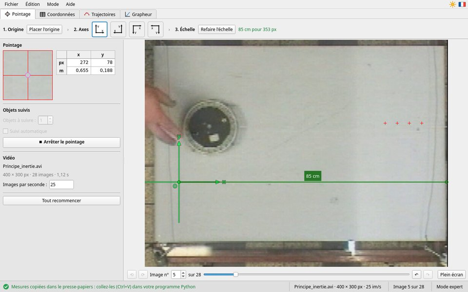
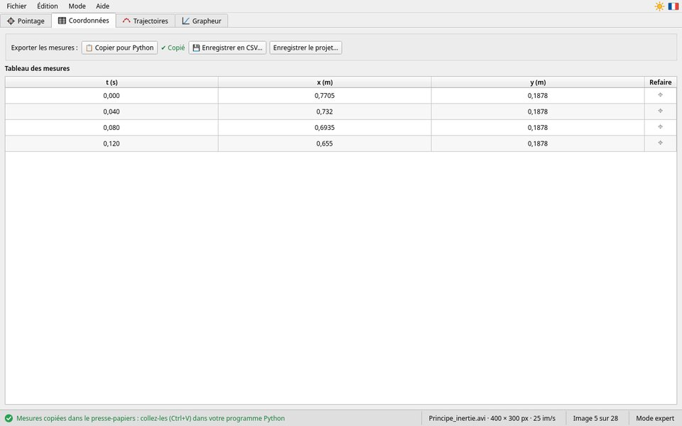
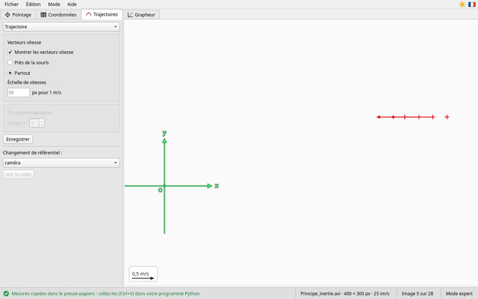
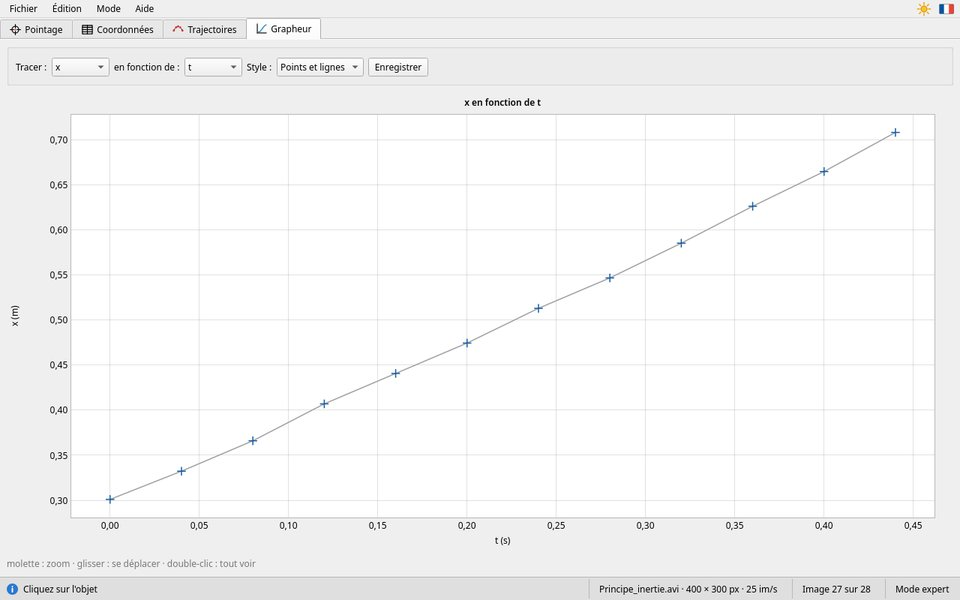

Le mode expert
Toutes les fonctions, dans quatre onglets
Le mode expert donne accès à tout : plusieurs objets, suivi automatique, trajectoires, vecteurs vitesse, chronophotographie, changement de référentiel, grapheur. On y passe par le menu Mode › Mode expert ; les mesures faites en mode simplifié sont gardées. Les quatre onglets, dans l'ordre du travail : 1. Pointage, 2. Coordonnées, 3. Trajectoires, 4. Grapheur. Les trois derniers s'ouvrent une fois le pointage démarré.
Onglet Pointage

En haut : le repère, en trois étapes
- 1. Origine — Placer l'origine
- Puis cliquez sur l'image à l'endroit choisi (un second appui sur le bouton, ou Échap, y renonce). Avant le pointage, l'origine se déplace aussi en la faisant glisser. Possible même après le pointage : les mesures sont recalculées.
- 2. Axes — quatre petits repères
- Un clic choisit le sens de x et de y ; le repère choisi est entouré. La souris posée sur un bouton dit son sens en mots (« x vers la droite, y vers le haut »).
- 3. Échelle — Définir l'échelle
- Tracez l'étalon sur l'image (deux clics, ou un glisser), puis donnez sa longueur et son unité (mm, cm ou m) dans la petite fenêtre. À côté du bouton : « 85 cm pour 353 px », ou « non définie : les mesures sont en pixel ». Voir L'échelle.
Pendant le choix de l'origine ou de l'étalon, la consigne s'affiche sous ces boutons, en orange, avec Annuler.
À gauche : la loupe, les objets, la vidéo
- Loupe et coordonnées
- L'image grossie autour de la souris, et les coordonnées du point visé, en px et en m.
- Objets à suivre
- Le nombre d'objets (1 à 10), avant de démarrer. Avec plusieurs objets, on pointe l'objet 1, puis l'objet 2… sur chaque image : le titre de la loupe dit lequel est attendu, et chaque objet a sa couleur.
- Suivi automatique
- Cochez-le avant de démarrer pour que MeVCine suive les objets tout seul (ci-dessous).
- Démarrer le pointage
- Chaque clic sur l'objet enregistre sa position et affiche l'image suivante. Placez-vous d'abord sur la première image utile. On ne laisse pas de trou : pour reprendre ailleurs, annulez les derniers points.
- ⏹ Arrêter le pointage
- Le pointage est fini : un clic sur l'image ne pointe plus, et l'onglet Coordonnées s'ouvre. Les mesures sont gardées ; ⌖ refait toujours une mesure. ▶ Reprendre le pointage le continue.
- Vidéo
- Le nom de la vidéo, ses dimensions, son nombre d'images, sa durée ; et les Images par seconde, détectées dans la vidéo. Pour un ralenti, indiquez la cadence de prise de vue (par exemple 240). « Cadence variable » signale des images irrégulièrement espacées : leurs dates réelles sont utilisées.
- Tout recommencer
- Efface les mesures, l'échelle et le repère ; la vidéo reste ouverte. MeVCine demande confirmation s'il y a des mesures.
Sous l'image : ⟲ ⟳ tournent la vidéo d'un quart de tour (avant l'échelle et le pointage) ; le numéro de l'image et la glissière ; ↶ ↷ annulent ou rétablissent le dernier point ; Plein écran (F11), pendant le pointage.
Pointer en plein écran
Plein écran donne tout l'écran à l'image. La loupe et les coordonnées restent affichées dans un cadre, en haut de l'image : il passe de l'autre côté quand la souris s'en approche, pour ne jamais cacher l'objet. La consigne est sous la loupe ; en bas, le choix de l'image, ✕ Quitter le plein écran (Échap), qui revient à la fenêtre sans arrêter le pointage, et ⏹ Arrêter le pointage. Le plein écran existe aussi en mode simplifié, à l'étape 4.
Le suivi automatique
- Indiquez le nombre d'objets, cochez Suivi automatique, placez-vous sur la première image utile, puis Démarrer le pointage.
- Après le message, tracez un cadre (glisser) autour de chaque objet, sur l'image affichée. Le cadre doit contenir l'objet, bien contrasté, avec peu de fond.
- MeVCine cherche chaque objet d'image en image, et pose les points. Le bouton rouge STOP l'arrête ; il s'arrête tout seul à la dernière image.
Vérifiez ensuite les points : un point mal placé se refait avec ⌖ (onglet Coordonnées). Le suivi marche bien pour un objet net, de couleur franche, sur un fond uni ; il se perd si l'objet tourne, change de taille ou passe devant un fond semblable.
Onglet Coordonnées

Le tableau prend tout l'onglet : la date t (zéro à la première image pointée) et les positions de chaque
objet, en mètre (x1, y1, x2… avec plusieurs objets). Le bouton
⌖ d'une ligne refait cette mesure : l'onglet Pointage s'ouvre sur l'image, le point
est entouré ; cliquez sur l'objet, et vous revenez au tableau.
Au-dessus, sur une ligne : 📋 Copier pour Python, 💾 Enregistrer en CSV…, Enregistrer le projet… ; la souris posée sur un bouton dit ce qu'il fait. Voir Exporter les mesures.
Onglet Trajectoires

- Trajectoire
- Les points, le repère et, si vous cochez Montrer les vecteurs vitesse, une flèche par point. Chaque vecteur est calculé avec les positions précédente et suivante. Leur longueur est choisie automatiquement ; pour la régler, tapez le nombre de pixels pour 1 m/s dans Échelle de vitesses (case vide : automatique ; la bulle de la case le rappelle). La légende, en bas à gauche, montre la flèche d'une vitesse ronde. Près de la souris ne dessine que le vecteur du point survolé.
- Chronophotographie
- Les points sur une image de la vidéo (Image n° choisit laquelle), avec l'intervalle Δt entre deux images, la date de l'image, et l'étalon en bleu.
- Chronogramme
- Les points seuls, sur fond blanc, nommés M0, M1, M2…, avec l'étalon : prêt à imprimer pour un travail sur papier.
- Enregistrer
- Enregistre le dessin comme image (PNG ou JPEG).
- Changement de référentiel
- Choisissez objet n° 1 au lieu de caméra : les points sont tracés dans le référentiel où cet objet est immobile. Voir la vidéo ouvre la vidéo recadrée pour que l'objet reste fixe, avec un ralenti réglable.
Onglet Grapheur

En haut, choisissez ce qu'il faut tracer (Tracer) et en fonction de quoi (en fonction de,
t d'office) : t, x, y, la vitesse |v| et ses
composantes vx, vy, l'accélération |a|, ax, ay.
Le graphique, vide au départ, se trace aussitôt, avec son titre et les légendes de ses axes. Trois styles : points
seuls, points et lignes, lignes seules. Enregistrer écrit le graphique en PNG, titre
compris.
Les vitesses et accélérations du grapheur sont des estimations rapides, par différences entre deux images successives. Elles servent à explorer le mouvement et ne sont pas exportées : le calcul propre, c'est à vous de le faire, à partir des positions.
Enregistrer, reprendre
Fichier › Enregistrer le projet… (Ctrl+S) garde tout ; Fichier › Ouvrir un projet… reprend là où vous en étiez. Voir Projets.